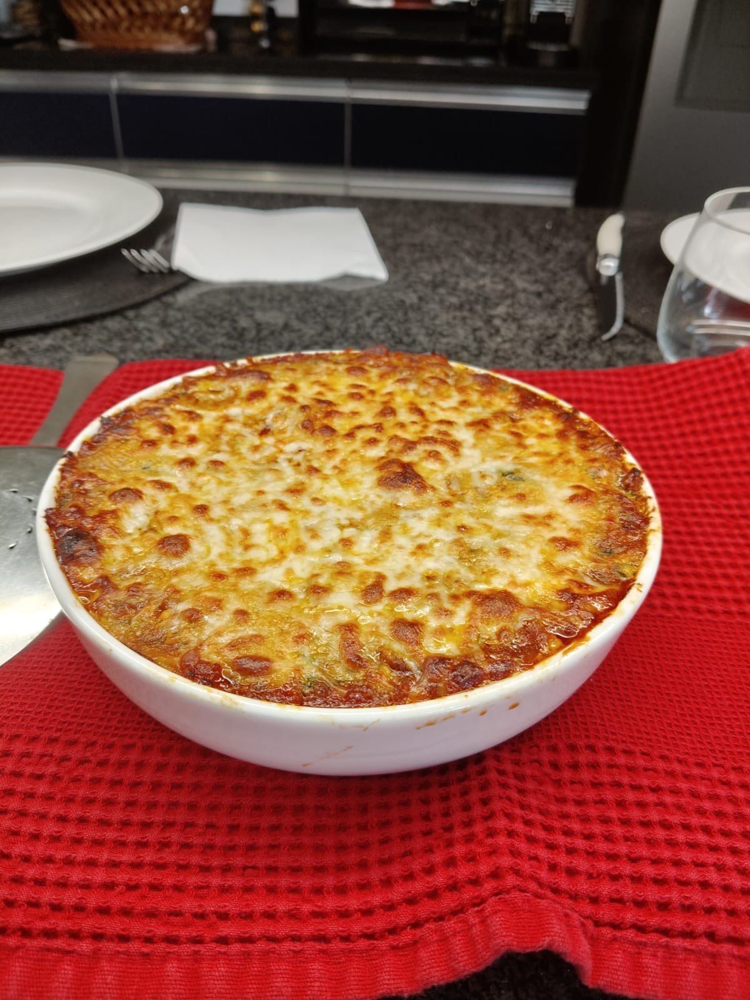

“Lasaña” de berenjena, tomate y espinacas con ricotta
Ingredientes
4×
- 2 berenjenas
- aceite de oliva
- 200 g de espinacas
- 250 g de ricotta
- 1 huevo crudo
- 400 g de tomate triturado
- 1 mozzarella

Preparación
Paso 1
Cortar 2 berenjenas en láminas a lo largo, salarlas, untarlas con aceite de oliva y hornearlas 15min a 200ºC.
Paso 2
Saltear 200 g de espinacas y mezclarlas con 250 g de ricotta y 1 huevo crudo. Salpimentar.
Paso 3
En una fuente, alternar capas de 400 g de tomate triturado, berenjena y la mezcla de espinacas y ricotta. Terminar con tomate y 1 mozzarella por encima.
Paso 4
Hornear 25min a 200ºC, hasta que la mozzarella esté gratinada.
Resumen
2 berenjenas
aceite de oliva
Cortar hornearlas 200ºC
200 g de espinacas
250 g de ricotta
1 huevo crudo
Saltear
400 g de tomate triturado
1 mozzarella
alternar
Hornear 200ºC